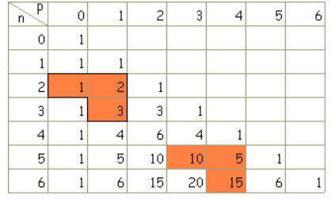

Dénombrement
1 Principe additif et multiplicatif
1.1 Ensemble fini et cardinal
Soit n un entier naturel. Lorsqu’un ensemble E a n éléments, on dit que E est un ensemble fini.
Le nombre n d’éléments de E est appelé le cardinal de E. On note \text{Card}(E)=n.
E=\{a;e;i;o;u;y\} est un ensemble à six éléments. On note \text{Card}(E)=6.
\text{Card}(\emptyset)=0
Certains ensembles ne sont pas finis. Par exemple l’ensemble \mathbb{N} des entiers naturels ou encore l’ensemble des réels de l’intervalle [0;1].
Deux ensembles A et B sont disjoints lorsque A\cap B =\emptyset
1.2 Principe additif
Soit p \in \mathbb{N}^*.
Soient A_1, A_2, ..., A_p, p ensembles finis deux à deux disjoints. On a:
\text{Card}(A_1 \cup A_2 \cup ... \cup A_p)=\text{Card}(A_1)+\text{Card}(A_2)+...+\text{Card}(A_p)
Autrement dit: \text{Card}(\bigcup\limits_{i=1}^{p}A_i)=\sum\limits_{i=1}^{p} \text{Card}(A_i)
Soient A une partie d’un ensemble E fini et \bar{A} le complémentaire de A dans E. On a:
\text{Card}(\bar{A})=\text{Card}(E)-\text{Card}(A)
La démonstration de cette proposition sera étudiée dans l’exercice 56 page 46.
1.3 Principe multiplicatif
Soient E et F deux ensembles non vides.
Le produit cartésien de E par F, noté E\times F, est l’ensemble des couples (x,y) avec x\in E et y \in F.
Soient E=\{a; b; c\} et F=\{1; 2 \}. Alors E\times F =\{ (a;1); (b;1); (c;1); (a;2); (b;2); (c;2)\} et F\times E=\{(1;a); (2;a); (1;b); (2;b); (1;c); (2;c)\}
On peut retrouver tous les couples du produit cartésien à l’aide d’un tableau à double entrée ou d’un arbre.
Lorsque les ensembles E et F sont finis, \text{Card}(E\times F)=\text{Card}(E) \times \text{Card}(F).
Le signe \times dans \text{Card}(E \times F) désigne le produit cartésien des ensembles E et F, alors que celui dans \text{Card}(E)\times \text{Card}(F) symbolise la multiplication de deux entiers.
Soient k un entier supérieur ou égal à 2 et E_1, E_2, ..., E_k, k ensembles non vides.
Toute liste ordonnée (x_1; x_2; ...; x_k) avec x_i \in E_i pour i allant de 1 à k est appelée un k-uplet ou k-liste.
L’ensemble de ces k-uplets est le produit cartésien E_1\times E_2 \times ... \times E_k.
Lorsque les ensembles E_1, E_2, ..., E_k sont finis, on a:
\text{Card}(E_1 \times E_2 \times ... \times E_k)= \text{Card}(E_1) \times \text{Card}(E_2) \times ... \times \text{Card}(E_k).
Autrement dit: \text{Card}\left(\prod\limits_{i=1}^k E_i\right) = \prod\limits_{i=1}^k\text{Card}(E_i)
2 k-uplets d’un ensemble fini
2.1 Nombre de k-uplets d’un ensemble à n éléments
Soit k \in \mathbb{N}^* et E un ensemble non vide.
Un k-uplet (ou k-liste) d’éléments de E est un élément du produit cartésien:
E^k=E\times E\times...\times E (k facteurs)
(a; b; r; f; h; a; b) est un 7-uplet de l’ensemble des 26 lettres E=\{a; b; ...; z \}
Soient n et k deux entiers naturels non nuls et E un ensemble fini de cardinal n.
Le nombre de k-uplet de E est n^k, ainsi \text{Card}\left(E^k \right)=n^k.
On dispose de trois boîtes A, B et C et de 5 jetons de couleurs différentes que l’on doit ranger dans les boîtes. Combien de rangements possibles existe-t-il ?
On note T=\{A;B;C\} l’ensemble des boîtes. Les différents rangements possibles sont des 5-uplets de T. Par exemple (A;B;B;A;C) signifie que l’on a rangé le premier jeton dans la boîte A, le deuxième dans la boîte B... Il y a alors 3^5=243 rangements possibles.
On peut utiliser un arbre de dénombrement pour compter tous les rangements possibles.
2.2 k-uplets d’éléments distincts d’un ensemble, arrangements, permutations
On dispose de trois jetons et de cinq boîtes notées A, B, C, D et E. On doit ranger les jetons dans les boîtes, une boîte ne pouvant contenir qu’un seul jeton. Combien de rangements possibles existe-t-il ?
On dispose de cinq possibilités pour le premier jeton, de quatre pour le deuxième, de trois pour le troisième. Les rangements possibles sont donc les 3-uplets d’éléments deux à deux distincts de l’ensemble E=\{A; B; C; D; E \}
Leur nombre est 5\times 4 \times 3=60
Soit E un ensemble non vide à n éléments et k un entier naturel inférieur ou égal à n. Un arrangement de k éléments de E (ou k-arrangement) est un k-uplet d’éléments distincts de E.
Soit n\in \mathbb{N}^* et k\in \mathbb{N} tel que 1 \leqslant k \leqslant n.
Soit E un ensemble fini de cardinal n. Le nombre de k-uplets d’éléments deux à deux distincts de E est:
n(n-1)(n-2)...(n-k+1)
On dispose maintenant de 3 jetons et de trois boîtes notées A, B et C. On range un jeton par boîte. Tous les rangements correspondent aux permutations des boîtes A, B et C.
On appelle permutation d’un ensemble E à n éléments tout n-uplet d’éléments deux à deux distincts de E
Les permutations de l’ensemble E=\{A; B; C\} sont:
(A;B;C), (A;C;B), (B;C;A), (B;A;C), (C;B;A) et (C;A;B)
Le nombre de permutations d’un ensemble à n éléments (n \in \mathbb{N}^*) est le nombre noté n! (qui se lit « factorielle n » ou « n factorielle »), défini par :
n!=n(n-1)(n-2)...\times2\times 1
Par convention, 0!=1.
3 Parties d’un ensemble et combinaisons
3.1 Nombre de parties d’un ensemble
Soit E un ensemble. Dire qu’un ensemble F est une partie de E (ou que F est un sous-ensemble de E, ou que F est inclus dans E) signifie que tous les éléments de F sont des éléments de E.
On note alors F \subset E.
Il ne faut pas confondre une partie d’un ensemble avec un k-uplet. Par exemple, \{1;2\}=\{2;1\} est une partie à deux éléments, tandis que (1;2) et (2;1) sont des couples distincts.
On considère l’ensemble E=\{a;b;c\}. Les ensembles A=\{a;c\} et B=\emptyset sont des parties de E.
Déterminer toutes les parties de E: Pour cela on peut construire un arbre.
Soit n\in \mathbb{N}. Le nombre de parties d’un ensemble à n éléments est égal au nombre de n-uplets de l’ensemble \{0;1\}, c’est-à-dire 2^n.
Pour constituer une partie F de E, il y a deux choix pour chaque élément de E: l’incorporer dans F ou pas. Puisque E possède n éléments, cela donne au total 2^n parties possibles.
On appelle mot de longueur n sur l’alphabet A=\{a;b\} un n-uplet d’éléments de A.
Par exemple, (a;b;b;a) est un mot de longueur 4 sur l’alphabet A. Il y a 2^n mots de longueur n.
3.2 Combinaison
Soient n et k deux entiers naturels tels que 0 \leqslant k \leqslant n et E un ensemble fini de cardinal n.
On appelle combinaison de k éléments de E toute partie de E ayant k éléments.
On considère les mots de longueur 3 formés avec les lettres de l’alphabet A=\{a;b\}. Construire un mot contenant exactement deux lettres a revient à déterminer la position des deux lettres a dans le mot de trois lettres, c’est-à-dire une combinaison de deux éléments de l’ensemble \{1; 2; 3\}. Il y en a trois.
Soient n et k deux entiers naturels tels que 0 \leqslant k \leqslant n. Le nombre de combinaisons de k éléments d’un ensemble à n éléments, noté \binom{n}{k}, est donné par:
\binom{n}{k}=\dfrac{n!}{k!(n-k)!}
Soit x le nombre de sous-ensembles à k éléments d’un ensemble à n éléments.
Si, à partir d’une partie à k éléments, on réalise toutes les permutations possibles, on obtient tous les k-uplets d’éléments distincts.
Ainsi, x \times k!=n(n-1)...(n-k+1)(=nombre de k-uplet) d’où x=\dfrac{n(n-1)..(n-(k-1))}{k!}.
Finalement, x=\dfrac{n(n-1)...(n-(k-1))}{k!}\times \dfrac{(n-k)\times ... \times 1}{(n-k)!}=\dfrac{n!}{k!(n-k)!}
4 Propriétés des combinaisons
4.1 Propriétés
Soit n\in \mathbb{N}.
\binom{n}{0}=1. Dans un ensemble à n éléments, il existe une seule partie à 0 élément: la partie vide.
\binom{n}{1}=n. Dans un ensemble à n éléments, il y a n parties ayant un élément.
\binom{n}{n}=1
Pour tous entiers n et k vérifiant 0 \leqslant k \leqslant n, \binom{n}{k}=\binom{n}{n-k}. Dénombrer les parties à k éléments revient à dénombrer les parties à n-k éléments qui en sont les complémentaires.
Pour tout entier naturel n, \sum\limits_{k=0}^n \binom{n}{k}=2^n.
Soit A un ensemble fini à n éléments. Pour tout entier naturel k, inférieur ou égal à n, on note A_k l’ensemble des parties de A à k éléments.
On a ainsi, \text{Card}(A_k)=\binom{n}{k}. Les A_k sont deux à deux disjoints et leur réunion est l’ensemble des parties de A, ainsi :
2^n=\text{Card}\left( \bigcup\limits_{i=0}^n A_i \right)=\sum\limits_{i=0}^n \text{Card}(A_i)=\sum\limits_{i=0}^n \binom{n}{i}
4.2 Relation et triangle de Pascal
Relation de Pascal
Pour tous entiers naturels n \geqslant 2 et p vérifiant 1 \leqslant p \leqslant n-1,
\binom{n}{p}=\binom{n-1}{p-1}+\binom{n-1}{p}
On peut ainsi calculer les \binom{n}{p} à l’aide du tableau ci-dessous, appelé triangle de Pascal.
À l’intersection de la ligne n et de la colonne p, on lit l’entier \binom{n}{p}.
On commence par écrire les « 1 » de la première colonne et de la diagonale, puis on utilise la relation de Pascal suivant le schéma:
\begin{aligned} \binom{n-1}{p-1}&+\binom{n-1}{p} \\ &= \binom{n}{p} \end{aligned}
